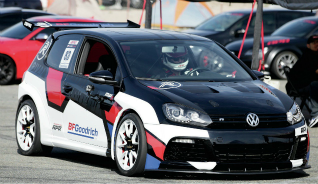

This morning is going to be quite special, seven weeks ago I invited the prince of Sweden to a race, not only did he accept, but as in days of old the one who accepts a challange chooses the weapon. He must have done his research, because he chose a 911 Porsche, a car that has not evolved in 50 years, a car based upon a Volkswagen
He must have known that I prefer to drive cars that are actually safe on the road, and cars with grip, while I won't deny that sometimes a Porsche can be eye candy, even some of the prettiest eye candy. as a trackday car I rather have a modern day VW Golf GTI
Up to the starting line
I started to think of all the things I could say to the prince about Porsche and about it's qualities as a trackday car, and what car I would have instead, but then I remeberd I am sitting here In a Porsche about to race the prince of sweden, in a Porsche provided by the prince. I should just shut up and race. I need to remeber that I am extremly lucky to be here in this position right now
The Princes car speeds off
Wait did he start already? Damn! it already started there I was thinking of other things! no fair!
As quick as a bullet I reach for the start button where the ignition key would be on a street car, the engine revs, my tires screech and I speed off, but the prince has already a 20 second lead. I don't think I could make that up not, but I enter what I like to call my zen mode
We are going to need a montage
The day is approaching to give it your best
You've got to reach your prime!
That's when you need to put yourself to the test
And show us the passage of time
We're gonna need a montage (Montage)
A sports-training montage (Montage)
The race is over
After my Zenlike Montage mode was over when I cross the finish line I realise that I did not win, not that I expected to do so, especially in a Porsche but I did only finish 15 seconds after the Prince so in a way I did drive faster than the prince, ill take that victory quietly. It's up to others to mention it.